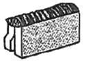
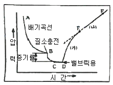

누설비파괴검사기사 (2020-09-26 기출문제)
1과목: 비파괴검사 개론
1. 결함의 형상을 육안으로 확인할 수 있어 해석이 용이한 비파괴검사법만으로 조합된 것은?
- 방사선투과검사, 자분탐상검사
- 초음파탐상검사, 침투탐상검사
- 와전류탐상검사, 자분탐상검사
- 와전류탐상검사, 침투탐상검사
(정답률: 62%)

2. 일반적으로 매 검사마다 소모성 재료비가 가장 많이 소요 되는 비파괴검사는?
- X선투과시험
- 와전류탐상시험
- 초음파탐상시험
- X선투시영상시험
(정답률: 72%)
3. 누설검사 시 샤를(Chals)의 법칙에 사용되는 온도는?
- Kelvin 온도
- Rankin 온도
- Centigrade 온도
- Brown 온도
(정답률: 65%)
4. 관의 내경이 2.5㎝이고 내삽형 프로브의 코일 외경이 2.0㎝ 이면 와전류탐상검사의 충전율은 몇 % 인가?
- 64%
- 80%
- 125%
- 156%
(정답률: 31%)
5. 침투탐상검사에 쓰이는 용어늬 정의 중 잘못 설명한 것은?
- 유화제 - 침투액을 세척할 수 있게 침투액 위에 적용하는 액체
- 배액시간 - 잉여 침투액을 세척한 후 침투액이 침투하도록 허용하는 시간
- 형광염료 - 자외선등 아래에서 자외선을 비추면 형광을 발생시키는 염료
- 침투시간 - 침투액을 표면에 적용시킨 후 결함 내부로 침투액이 침투되도록 허용하는 시간
(정답률: 71%)
6. 구리의 성질에 대한 설명으로 틀린 것은?
- 전연성이 좋아 가공이 용이하다.
- 전기 및 열의 전도성이 우수하다.
- 화학적 저항력이 작아서 부식이 심하다.
- Zn, Sn, Ni과 합금을 만든다.
(정답률: 50%)
7. 인장시험에서 지름이 10mm이고, 표점거리가 50mm인 강봉을 인장 시험하였을 때, 강봉의 인장강도는 얼마인가? (단, 인장시험 중 최대 하중은 100kN이다.)
- 1273 MPa
- 1273 Pa
- 51 MPa
- 51 Pa
(정답률: 29%)
8. 알루미늄 합금의 질별기호에서 T4는 무엇인가?
- 과시효 처리한 것
- 제조한 그대로의 것
- 용체화 처리 후 자연 시효시킨 것
- 용체화 처리 후 인공 시효시킨 것
(정답률: 43%)
9. Lo-Ex 합금에 대한 설명으로 틀린 것은?
- 고온강도가 크다.
- 내마모성이 좋다.
- 피스톤 재료로 시용한다.
- 열팽창계수가 크다.
(정답률: 40%)
10. 경도 시험의 종류 중 대면각이 136°인 다이아몬드 재료의 피라미드 형상 압입자를 사용하여 경도를 측정하는 시험 방법은?
- 쇼어 경도시험
- 비커스 경도시험
- 로크웰 경도시험
- 브리넬 경도시험
(정답률: 38%)
11. 스테인리스강의 조직에 따른 분류가 아닌 것은?
- 시멘타이트형
- 페라이트형
- 마텐자이트형
- 석출경화형
(정답률: 31%)
12. 침탄용 강의 구비조건이 아닌 것은?
- 저탄소강이어야 한다.
- 표면에 결함이 없어야 한다.
- 침탄 시 고온에서 장시간 가열하여도 연화하지 않아야 한다.
- 침탄 시 고온에서 장시간 가열하면 결정입자가 성장하여야 한다.
(정답률: 47%)
13. 쾌삭강의 피삭성을 증가시키는 합금 원소는?
- Se
- Si
- C
- Ni
(정답률: 32%)
14. 분말야금법의 특징이 아닌 것은?
- 기공이 분산된 재료의 제조가 가능하다.
- 고융점 재료, 복합재료의 제조가 가능하다.
- 최종제품의 형상으로 만들 수 있다.
- 제품의 크기와 형상에 제한이 없다.
(정답률: 47%)
15. 구상흑연주철에 구상화 접종제로 많이 사용되는 것은?
- Fe
- Mg
- Sn
- Mn
(정답률: 47%)
16. 서브머지드 아크 용접에서 와이어의 적당한 돌출길이는 와이어 지름의 몇 배 전후로 하는 것이 가장 적단한가?
- 2
- 4
- 6
- 8
(정답률: 23%)
17. 다음 그림과 같은 용접이음의 명칭으로 옳은 것은?

- 겹치기 이음
- 변두리 이음
- 맞대기 이음
- 측면 필릿 이음
(정답률: 44%)
18. 다음 중 용접작업으로 인하여 발생된 결함이 아닌 것은?
- 힐 균열
- 오버랩
- 라멜라테어
- 라미네이션
(정답률: 50%)
19. 아크 용접기의 정격 사용률이 40%이고, 정격 2차 전류가 400A 일 때 실제 용접전류가 300A를 사용한 경우 허용 사용률은 약 몇 %인가?
- 53.3
- 60.3
- 71.1
- 75.4
(정답률: 54%)
20. 피복 아크 용접봉에서 피복제의 역할로 틀린 것은?
- 아크를 안정시킨다.
- 스패터 발생을 많게 한다.
- 용착 금속의 탈산 정련 작용을 한다.
- 용착 금속의 냉각 속도를 느리게 한다.
(정답률: 50%)
2과목: 누설검사 원리
21. 누설검출기나 누설시험 시스템에서 출력신호가 최대 신호에서 몇 % 감쇠되는 시간을 응답시간이라 하는가?
- 10%
- 37%
- 50%
- 63%
(정답률: 58%)
22. 관통된 구멍 또는 틈을 통하여 압력이 높은 쪽에서 낮은 쪽으로 흐르는 유체의 흐름을 나타내는 용어는?
- 누셜(Leak)
- 누설량(Leakage)
- 누설율(Leak Rate)
- 검출가능 누설(Detectable Leak Rate)
(정답률: 65%)
23. 음향방출누설검사에 영향을 주는 인자가 아닌 것은?
- 유체의 PH값
- 유체의 점도
- 유체의 속도
- 압력의 차이
(정답률: 69%)
24. 1기압(14.7psi)의 압력차를 갖는 시험조건에서 기포누설 시험에 의한 검출가능 감도는?
- 10-2~10-3stdㆍcm3/s
- 10-4~10-5stdㆍcm3/s
- 10-5~10-6stdㆍcm3/s
- 10-6~10-7stdㆍcm3/s
(정답률: 57%)
25. 전자포획할로겐 검출에서 사용되는 추적가스로 적합한 것은?
- SF3
- SF4
- SF5
- SF6
(정답률: 43%)
26. 헬륨질량분석시험에 대한 원리 설명 중 틀린 것은?
- 공기 중의 헬륨농도가 많을수록 감도가 저하된다.
- 전공분무법(추적프로브법)으로 큰 용량의 시험품을 시험할 때는 응답시간이 길어져 누설위치의 측정이 어려워진다.
- 진공 후드법은 시험체 내부를 헬륨으로 가압하여 검사한다.
- 진공 직분법은 미세누설이 예상될 때 배기속도를 0 으로 하여 헬륨을 집적시켜 검사한다.
(정답률: 27%)
27. 천이유동(transition flow)이 발생하는 경우에 대한 설명으로 맞는 것은?
- 천이유동은 기체의 평균 자유도가 물리적인 누설의 직경보다 클 경우에 발생한다.
- 천이유동은 기체의 평균 자유도가 물리적인 누설의 직경과 대략 같을 경우에 발생한다.
- 천이유동 기체의 평균 자유도가 물리적인 누설의 직경보다 작을 경우에 발생한다.
- 천이유동 기체의 평균 자유도가 물리적인 누설의 직경과는 관계없이 발생한다.
(정답률: 44%)
28. 진공상자를 이용한 기포 누설시험의 설명으로 틀린 것은?
- 관찰창으로 균열 여부를 점검한다.
- 교정된 진공게이지를 사용한다.
- 시험체의 표준 표면 온도는 4℃~50℃ 정도이다.
- 정지상태의 기포를 누설로 간주한다.
(정답률: 62%)
29. 누설시험에서 완결시간(Clean up time)의 의미는?
- 추적가스의 공급을 중단한 시험에서 기기상의 출력신호가 17%로 감소하는데 요하는 시간
- 추적가스의 공급을 중단한 시험에서 기기상의 출력신호가 27%로 감소하는데 요하는 시간추적가
- 추적가스의 공급을 중단한 시험에서 기기상의 출력신호가 37%로 감소하는데 요하는 시간
- 추적가스의 공급을 중단한 시험에서 기기상의 출력신호가 47%로 감소하는데 요하는 시간
(정답률: 58%)
30. 헬륨질량부선 시험을 감도가 1×10-10 Paㆍm3/s 이고 잡음신호가 최대 출력치의 2% 미만일 때 최소 검출 누설률(Paㆍm3/s)은?
- 1×10-10
- 2×10-10
- 4×10-10
- 8×10-10
(정답률: 50%)
31. 표준상태 공기의 체적은 시료 안에 있는 기체의 분자수에 바로 비례하는 법칙은?
- 브라운 운동
- 달론의 법칙
- 아보가드로의 법칙
- 충분포의 원리
(정답률: 67%)
32. 질소가 충전되어 있는 압력용기의 온도가 17℃일 때 압력이 30000torr였다. 어떤 이유로 인해 이 이 용기의 온도가 32℃로 상승되었다면 이때의 압력은? (단, 체적의 변화는 없는 것으로 가정한다.)
- 15775torr
- 28235torr
- 31551torr
- 56470torr
(정답률: 54%)
33. 누설시험의 원리에서 추적가스로 많이 쓰이며 상온과 대기압하에서 색이 없고 혀와 모를 심하게 자극하는 냄새를 가진 알카리성 기체는?
- 암모니아
- 황화수소
- 산화질소
- 염소
(정답률: 75%)
34. 단독 기포가 특정 크기까지 도달하는 시간이 8초이고 그 때의 누설 직경이 5mm라면 누설률은 얼마인가?
- 0.016 Paㆍm3/s
- 0.0016 Paㆍm3/s
- 0.0008 Paㆍm3/s
- 0.008 Paㆍm3/s
(정답률: 45%)
35. 진공법의 압력상승기법에서 누설간도에 연향을 주는 인자가 아닌 것은?
- 시스템의 내부체적
- 시험시간
- 내부표면적과 시스템의 청결도
- 시험품의 밀도
(정답률: 50%)
36. 압력변화시험원리에서 검사를 시작할 때 온도 및 압력을 측정한 후 10시간 동안 검사를 했다. 이 경우 온도 및 압력을 최소 몇 회 측정해야 하는가?
- 1회
- 5회
- 6회
- 10회
(정답률: 39%)
37. 시험체의 외부로부터 내부로 누설되는 기체에 의해 시험체 내의 압력이 변화하는 상태를 압력계로 측정하여 일정시간 경과 전후의 압력차로 누설량을 측정하는 방법은?
- 침지법
- 전공상지법
- 가압법
- 감압법
(정답률: 8%)
38. 누설검사를 실시하는 목적으로 거리가 먼 것은?
- 표준에서 벗어난 누설률과 적절한 제품을 확인하기 위하여
- 돌발적인 누설에 기인하는 유해한 환경요소를 방지하기 위하여
- 시스템 작동에 방해의 요인이 되는 재료의 누설 손실을 방지하기 위하여
- 제품의 실용성과 안전성을 반영하기 위하여
(정답률: 38%)
39. 할로겐다이오드 검출 시험 중 초기교정 감도보다 낮은 감도가 확인되어 재교정 하였다. 이 후 절차는?
- 시험 중인 그시스템을 통기(venl)시켜 이미 검출된 모든 누설들을 수리하낟.
- 재교정하기 전에 시험을 중단 하였던 위치에서 시작하여 계속 시험을 진행시킨다.
- 이미 시험된 모든 위치를 다시 시험한다.,
- 정상적인 감도로 검증된 구간은 제외시키고, 그 다음 위치의 시험을 계속한다.
(정답률: 50%)
40. 할로겐다이오드 누설검사에서 일반적으로 사용되는 추적가스가 아닌 것은?
- Ne
- R-21
- CH3Cl
- R-12
(정답률: 50%)
3과목: 누설검사 시험
41. 유동률 측정법의 특징에 대한 설명 중 틀린 것은?
- 시험강도가 매우 높다.
- 전체 누설량 측정감도는 시스템의 체적과 무관하다.
- 특별한 추적가스를 필요로 하지 않는다.
- 대형 밀봉 시험체 등의 총 누설량을 측정하는데 사용된다.
(정답률: 43%)
42. 다음 중 헬륨질량분석 누설검사로 얻은 결과로서 해석하기 어려운 정보는?
- 누설의 종류
- 누설의 존재
- 누설의 위치
- 누설량
(정답률: 74%)
43. 진공상자를 이용하는 누설검사에서 모든 검사부위가 검사되었음을 보강하기 위한 진공상자의 겹침을 최소한 얼마 이상 되어야 하는가?
- 겹침이 필요없다.
- 진공상자의 50%
- 5㎝
- 고무패킹의 깊이
(정답률: 54%)
44. 다음 중 진공펌프가 내장되어 있는 누설검사 장치는?
- 열전도도계기(thermal conductivity gages)
- 적외선가스분석기(infrared gas analyzer)
- 질량분석기(mass spectrometer)
- 마노미터(manometer)
(정답률: 54%)
45. 헬륨질량분석기로 검출할 수 있는 최소 누설률은?
- 0.⑤ Paㆍm3/s
- 10-4 Paㆍm3/s
- 10-5 Paㆍm3/s
- 10-12 Paㆍm3/s
(정답률: 34%)
46. 펌프의 배기속도가 50m3/s이고 시험체의 용적이 1000m3일 때 배기시간은?
- 10초
- 20초
- 30초
- 40초
(정답률: 34%)
47. 암모니아 누설시험에서 지시의 검출감도에 가장 큰 영향을 주는 것은?
- 온도
- 습도
- 진동
- 검지제 피막두께
(정답률: 50%)
48. 할로겐 누설검사의 여러 형태 중 색의 변화를 이용하여 누설위치를 알 수 있는 것은?
- 가열양극 할로겐 누설검사법
- 할라이드 토치법
- 전자포획법
- 색층분석법
(정답률: 43%)
49. 음향누설검사 시 압력경계와 미세 구멍에서 유체의 흐름에 의해 발생된 음의 스펙트럼은 다음 중 어느 주파수에서 가장 쉽게 감응하는가?
- 4Hz
- 40kHz
- 4MHz
- 40MHz
(정답률: 63%)
50. CO2 추적가스(tracer gas)를 이용하여 화학적 지시에 의한 누설검출 기술을 적용할 때, 누설지시를 위해 시험체 표면에 분무되어 사용되는 용액은?
- 브롬크레졸 자주색 염료(Brom cresol purple dye)
- 브롬페놀 검사체(Brom-phenol paint)
- 페놀프탈레인(Phenolphthalein)
- Agar-Agar용액
(정답률: 64%)
51. 다음 그림은 진공 시스템의 공기를 펌프로 뺄 때 나타나는 대표적인 배기 특성곡선이다. 그림에서 D와 E, 즉 (가)구역이 곡선으로 나타나는 이뉴는?

- 빼는 가스의 영향
- 액체 질소의 영향
- 할로겐 가스의 영향
- 누설이나 out gassing 영향
(정답률: 63%)
52. 기포누설검사에 사용되는 기포형성 용액의 특성을 설명한 것 중 틀린 것은?
- 점도가 낮아야 한다.
- 표면장력이 작아야 한다.
- 진공하에서 증발하기 어려워야 한다.
- 기포형성 용액 자체에 거품이 많아야 한다,
(정답률: 50%)
53. 다음 중 헬륨(He) 스니퍼 시험에서 모든 조건이 동일하고 스니퍼 호스의 길이만 2배로 증가되었다면 시험감도는?
- 초기감도의 1/4배가 된다.
- 초기감도의 1/2배가 된다.
- 초기감도의 2배가 된다.
- 초기감도의 4배가 된다.
(정답률: 63%)
54. 누설검사 발포액으로서 일반 상업용 세제나 비누용액은 사용할 수 없는 이유로 타장하지 않은 것은?
- 대부분의 비누용액은 PH 10.5~PH 11.5정도의 알카리성으로서 알루미늄 합금 등에 부식을 유발한다.
- 대부분의 비누영액은 염소나 불소와 같은 불순물을 포함할 수 있다.
- 세제는 센물에서 끈적거리는 점착성의 수지를 형성한다.
- 대부분의 비누용액은 공기와 접촉할 때 불안정한 조성을 갖는다.
(정답률: 50%)
55. 다음 누설률의 단위 중 SI단위는?
- stdㆍcm3/s
- torrㆍℓ/s
- atmㆍcm3/s
- Paㆍcm3/s
(정답률: 47%)
56. 추적기체를 필라멘트의 전자빔에 의해 이온화 시켜 검사하는 누설검사법은?
- 헬륨질량분석기 시험
- 암모니아 누설 시험
- 전자 포획법
- 전기전도도법
(정답률: 20%)
57. 할로겐 다이오드 검출기 프로브(probe) 시험 중에 불규칙한 신호들이 나타나는 것은?
- 검출기의 감도가 부적절함
- 대기의 온도가 급변함
- 시험자의 경험 부족
- 시험 물체의 한 부위에 큰 누설이 있음
(정답률: 50%)
58. 재료의 결함 누설시험에서 누설률이 10-8Paㆍm3ㆍs-1 미만인 미세한 누설들에 대해 일반적으로 시험하지 않은 이유로 가장 타당한 것은?
- 재료 결함 누설시험은 그럼 시험을 할 수 없기 때문이다.
- 산업 시설에서 그런 누설들은 용접한 자리, 기계적인 접합자리에서 발생하는 결함이 아니기 떄문이다.
- 미세한 누설시험을 하려면 막대한 비용을 부담해야 하기 때문이다.
- 산업 시설에서 그런 누설(틈새)은 수중기와 액체가 막아주기 때문이다.
(정답률: 55%)
59. 탄성을 이용하여 압력을 측정하며, 고압장치에 가장 많이 사용되는 2차압력계의 대표적인 압력계는?
- 다이아프램 압력계
- 벨로우즈 압력계
- 스트레인 게이지
- 버돈관 압력계
(정답률: 38%)
60. 다은 중 진공감압에 의한 누설검사에서 허위누설이 발생된 것으로 볼 수 없는 것은?
- 이중벽 용접
- 페 스터드 홀
- 이중 가스켓 설계물
- 가스켓을 통과한 철가루
(정답률: 71%)
4과목: 누설검사 규격
61. 보일러 및 압력용기에 대한 누설검사(ASME Sec.V, Art. 10)에 따른 할로겐 다이오드 검출기 프로브검사법에서 장비의 교정 시 프로브의 팁(tip)과 누설 표준의 구멍과의 유지 거리는?
- 1/8인치 이내
- 1/4인치 이내
- 1/2인치 이내
- 1인치 이내
(정답률: 36%)
62. 보일러 및 압력용기에 대한 누설검사(ASME Sec.V, Art. 10)에 따른 할로겐 다이오드 검출기 프로브검사법에서 적용하는 추적가스가 아닌 것은?
- 염화메틸렌
- 플루오르황화문
- 암모니아
- 냉매-11(R-11)
(정답률: 43%)
63. 보일러 및 압력용기에 대한 누설검사(ASME Sec.V, Art. 10)에 따른 할로겐 다이오드 검출기 프로브검사법의 장비 중 누설을 나타내는 신호 표시 장치에 속하지 않는 것은?
- 메타(meter)
- 음향 장비(audio drvices)
- 지시 조명(indicator light)
- 게이지(gage)
(정답률: 32%)
64. 질량 분석계를 이용한 압력 및 진공 용기 누출 시험 방법(KS B 5648)에서 누출을 정량작으로 파악하기 위해서 도입한 양을 정의한 용어는?
- 누설합
- 누설 단위
- 누출률
- 실제 누출
(정답률: 24%)
65. 보일러 및 압력용기에 대한 누설검사(ASME Sec.V, Art. 10)에 따른 헬륨 질량분석기 검사-검출기 프로브법에서 시험 부위에 대한 합격 기준은?
- 누설률이 1×10-4stdㆍcm3/s를 초과하지 않을 때
- 누설률이 1×10-5stdㆍcm3/s를 초과하지 않을 때
- 누설률이 1×10-6stdㆍcm3/s를 초과하지 않을 때
- 누설률이 1×10-7stdㆍcm3/s를 초과하지 않을 때
(정답률: 31%)
66. 보일러 및 압력용기에 대한 누설검사(ASME Sec.V, Art. 10)에 따라 기포누설검사-직접가압법을 수행할 때 시험체 일부분에서 기포가 발생되었다. 이에 대한 평가 방법 중 틀린 것은?
- 기포가 발생되지 않는 부위는 합격처리한다.
- 기포가 발생된 부위는 표기한다.
- 누설 부위는 수정되어야 한다.
- 수정 부위는 재시험 할 필요가 없다.
(정답률: 78%)
67. 용접식 강재 석유 저장 탱크의 구조(KS B 6225)에 따라 강재 석유 저장 탱크의 애뉼러 플레이트 용접부에 대해 진공상자 누설 검사를 하고자 할 때 시험 압력은?
- 대기압보다 최소한 23.3 kPa 낮은 압력으로 시험한다.
- 대기압보다 최소한 33.3 kPa 낮은 압력으로 시험한다.
- 대기압보다 최소한 43.3 kPa 낮은 압력으로 시험한다.
- 대기압보다 최소한 53.3 kPa 낮은 압력으로 시험한다.
(정답률: 50%)
68. 보일러 및 압력용기에 대한 누설검사(ASME Sec.V, Art. 10)에 규정된 헬륨 질량분석기검사-검출기 프로브법에서 시험 전 최소 압력유지 시간(soak time)은?
- 10초
- 5분
- 30분
- 60분
(정답률: 58%)
69. 보일러 및 압력용기에 대한 누설검사(ASME Sec.V, Art. 10)에 따른 헬륨 질량분석기검사-후드법에 규정된 시험 절차서 요건 중 필수변수가 아닌 것은?
- 금속 온도
- 시험 후처리 기법
- 표면 준비 기법
- 장비 제조사 및 모델
(정답률: 44%)
70. 질량 분석계를 이용한 압력 및 진공 용기 누출 시험 방법(KS B 5648)에 규정된 가상 누출에 해당하는 것은?
- 틈새 누출
- 투과 누출
- 탈착
- 관통
(정답률: 36%)
71. 보일러 및 압력용기에 대한 누설검사(ASME Sec.V, Art. 10)에 따라 압력변화검사법으로 시험체에 압력을 가할 때 올바른 방법은/
- 설계압력의 1.25배를 초과하지 않아야 한다.
- 설계압력의 1.5배를 초과하지 않아야 한다.
- 설계압력의 2배를 초과하지 않아야 한다.
- 설계압력을 초과하지 않아야 한다.
(정답률: 40%)
72. 보일러 및 압력용기에 대한 누설검사(ASME Sec.V, Art. 10)에 따른 누설검사에서 사용 할 게이지의 요건으로 틀린 것은?
- 기록형 압력게이지는 필요한 최대압력의 대략 2배의 압력범위의 눈금판을 가지는 것이 좋다.
- 기록형 징공게이지는 눈금판의 범위는 필요한 최대압력의 1.5배 이하나 4배를 초과하는 눈금판을 가져서는 안된다..
- 대형 용기의 누설검사에는 기록형 게이지와 지시형 게이지를 병용해도 좋다.
- 다이알 지형 게이지는 배기하는 동안 검사원이 게이지를 쉽게 읽을 수 있도록 검사품에 직접 연결하거나 원격위치에 연결하여야 한다.
(정답률: 50%)
73. 주철 보일러의 구조(KS B 6202)에 따라 증기보일러에 대한 수압시험을 실시할 때 적용하는 시험 압력은?
- 50 kPa
- 100 kPa
- 150 kPa
- 200 kPa
(정답률: 48%)
74. 액화석유 가스용 용접 강재 실러더-재충전용(KS B 6211)에 따라 가압시험을 할 경우 압력 유지 시간은?
- 10초 이상
- 20초 이상
- 30초 이상
- 60초 이상
(정답률: 50%)
75. 용접식 강재 석유 저장 탱크의 구조(KS B 6255)에서 부상 지붕 배수 설비를 조립한 후 몸통의 물 채우기 시험 전에 누설 검사를 수행할 때 적용해야 하는 시험 압력은?
- 300 kPa
- 500 kPa
- 700 kPa
- 1000 kPa
(정답률: 75%)
76. 보일러 및 압력용기에 대한 누설검사(ASME Sec.V, Art. 10)에 따른 할로겐 다이오드 검출기 프로브검사법에서 서면 절차서의 요건이 아닌 것은?
- 감도 입증 확인
- 진공 시험압력
- 추적가스 농도
- 누설표준
(정답률: 8%)
77. 고압가스 실린더용 밸브(KS B 6214)에 따라 밸브 몸체에 대하여 내압시험을 실시할 때, 내압시험 압력에 도달한 후 압력 유지 시간은?
- 10초 이상
- 20초 이상
- 30초 이상
- 60초 이상
(정답률: 60%)
78. 보일러 및 압력용기에 대한 누설검사(ASME Sec.V, Art. 10)에 따른 헬륨 질량분석기검사-검출기 프로브법에서 헬륨에 대한 장치의 최저 감도 기준은?
- 1×10-9Paㆍcm3/sec
- 1×10-9Paㆍm3/sec
- 1×10-10Paㆍm3/sec
- 1×10-10Paㆍcm3/sec
(정답률: 53%)
79. 용접식 강젱 석유 저장 탱크의 구조(KS B 6225)에 따른 저장탱크의 밑판 용접부에 대한 누설검사 방법으로 옳은 것은?
- 비눗물을 사용하여 진공에서 누설을 검사한다.
- 비눗물을 사용하여 압력을 가하여 누설을 검사한다.
- 암모니아를 사용하여 누설을 검사한다.
- 초음과 누설 검출기를 사용하여 누설을 검사한다.
(정답률: 36%)
80. 고압가스 실린더용 밸브(KS B 6214)에 따라 밸브 몸체에 대하여 내압시험을 실시할 때, 물을 사용하는 것이 적절하지 않은 부속품의 경우에 사용될 수 있는 가압 기체는?
- 공기 또는 질소
- 공기 또는 암모니아
- 냉매가스 또는 질소
- 냉매가스 또는 암모니아
(정답률: 54%)